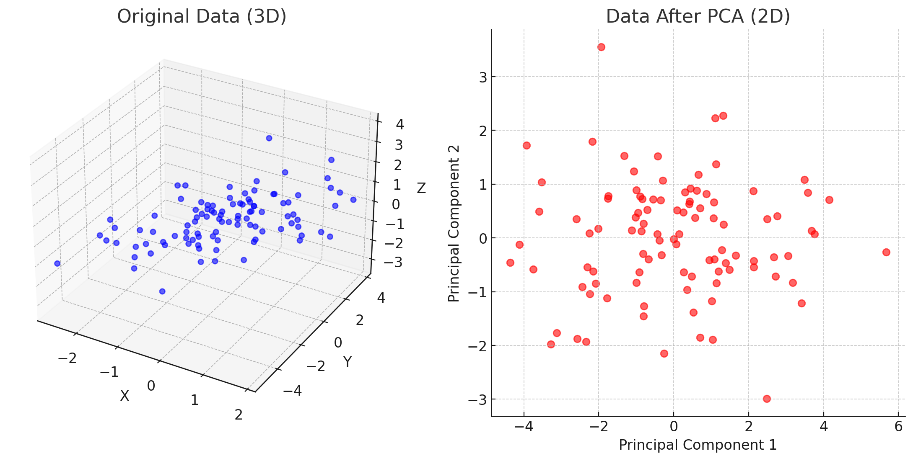

1. Lecture Objectives
This lecture introduces autoencoders as an unsupervised learning approach for learning compact latent representations that preserve the essential structure of the data while enabling reconstruction of the original inputs. We begin by motivating representation learning through dimensionality reduction and briefly connecting autoencoders to principal component analysis as a linear baseline for capturing dominant variance. We then develop the core encoder–decoder framework and compare linear autoencoders with nonlinear autoencoders, emphasizing how nonlinearities allow the model to represent more complex, non-linear structure beyond a single subspace. Next, we study practical architectures on MNIST, including fully-connected and convolutional autoencoders, and examine how their learned latent spaces and reconstructions differ in quality. Finally, we discuss how convolutional decoders restore spatial resolution through upsampling mechanisms such as unpooling, max-unpooling with indices, and transposed convolution (including how to compute output sizes), and we conclude with qualitative reconstruction examples and latent-space visualizations.
2. Autoencoders
2.1 Motivation
In unsupervised learning, the goal is to learn a lower-dimensional representation \(Z\) that captures the essential structure of the data \(\mathbf{X}\). This representation can then be used to reconstruct the data, providing insights into its underlying structure. The \(Z\)-space, which often has fewer dimensions than \(\mathbf{X}\), serves various purposes, including data visualization by mapping \(\mathbf{X}\) to a 2-dimensional space, dimensionality reduction for compressing images, documents, or text, and supporting subsequent supervised tasks by using \(Z\) as a basis for further training or fine-tuning.
An autoencoder is a type of model used for unsupervised learning that
aims to learn a lower-dimensional representation \(Z\) from the unlabeled input data \(\mathbf{X}\). In the case of linear
dimensionality reduction, principal component analysis (PCA) can be used
to project \(\mathbf{X}\) onto a \(K\)-dimensional subspace

2.2 Principal Component Analysis (PCA)
The intuition behind Principal Component Analysis (PCA) is that it finds the simplest way to represent data by focusing on the directions with the most variation, or “spread.” Imagine you have a dataset with many variables that are related to each other. In most real-world datasets, some features are more influential than others in explaining the variability. PCA identifies these key directions, called principal components, to represent the data in a reduced yet meaningful way.
PCA begins by finding the direction along which the data varies the most; this becomes the first principal component and captures the maximum possible variance with a single line. Next, PCA identifies the direction of the next largest variation that is perpendicular (and therefore uncorrelated) to the first component. This becomes the second principal component. The process continues, producing a sequence of orthogonal directions that capture decreasing amounts of variance.
In many datasets, most of the meaningful variation lies along just a few of these principal components. As a result, the remaining components can often be ignored with minimal loss of information. For example, a dataset that originally has ten dimensions may be well represented by only two or three principal components. By projecting the data onto these few components, PCA reduces the dimensionality of the dataset while preserving its essential structure.

Figure 2 illustrates how PCA reduces dimensionality while preserving the most important structure in the data. The original three-dimensional dataset lies close to a lower-dimensional subspace, which allows PCA to project the data onto two principal components with minimal information loss.
2.3 Linear Autoencoder
A linear autoencoder is a neural network for dimensionality reduction that learns a lower-dimensional representation \(Z\) of the input data \(\mathbf{X}\) using only linear transformations. When trained using squared reconstruction loss and without nonlinear activation functions, a linear autoencoder is closely related to principal component analysis (PCA).
In this setup, the encoder consists of a fully connected layer with weight matrix \(V_K \in \mathbb{R}^{P \times K}\), mapping the input to a latent representation \[Z = \mathbf{X} V_K.\] The decoder reconstructs the input using another fully connected layer with weights \(V_K^T\), producing \[\hat{\mathbf{X}} = Z V_K^T = \mathbf{X} V_K V_K^T.\]
The model is trained by minimizing the squared reconstruction loss \[L(\mathbf{X}, \hat{\mathbf{X}}) = \|\mathbf{X} - \hat{\mathbf{X}}\|_F^2.\]
When the columns of \(V_K\) are orthonormal and correspond to the top \(K\) eigenvectors of \(\mathbf{X}^T \mathbf{X}\), the linear autoencoder projects the data onto the same \(K\)-dimensional subspace found by PCA. In this case, the learned representation spans the principal subspace that captures the largest variance in the data.

2.4 Nonlinear Autoencoders
Unlike linear autoencoders, which restrict the model to linear projections, nonlinear autoencoders introduce nonlinear activation functions (such as ReLU, sigmoid, or tanh) in the encoder and decoder networks. This allows the model to learn nonlinear transformations of the input data \(\mathbf{X}\) and map it to a latent representation that lies on a nonlinear manifold.
Formally, the encoder and decoder become nonlinear functions, \[Z = E_\theta(\mathbf{X}), \qquad \hat{\mathbf{X}} = G_\Phi(Z),\] and the model is trained by minimizing the same reconstruction loss \(\|\mathbf{X}-\hat{\mathbf{X}}\|_F^2\). Because of the nonlinear activations, the equivalence with PCA no longer holds, and the autoencoder is no longer limited to learning a linear subspace.
This added flexibility enables nonlinear autoencoders to capture complex structures and variations in data that cannot be represented by linear dimensionality reduction. As a result, they are particularly effective for high-dimensional datasets such as images, where the data often lies on curved, lower-dimensional manifolds embedded in high-dimensional space.

3. Fully-connected Autoencoders
In fully-connected autoencoders, both the encoder and decoder are implemented using dense (fully-connected) neural network layers. Figure 5 illustrates the basic encoder–decoder structure.

Fully-connected autoencoders can be applied to the MNIST handwritten digit dataset for dimensionality reduction and feature extraction. Each MNIST image has size \(28\times28\) and is flattened into a 784-dimensional vector before being fed into the network. The architecture typically consists of several fully-connected layers with ReLU activations in the hidden layers and a sigmoid activation in the output layer to reconstruct pixel intensities.

Let the dataset be \(\mathbf{X} \in \mathbb{R}^{N \times P}\), where each input vector \(\mathbf{x}_i \in \mathbb{R}^P\) and the weight matrix of layer \(k\) is \(\mathbf{W}^{(k)} \in \mathbb{R}^{P^{(k)} \times P^{(k-1)}}\). During training, the encoder compresses the input into a low-dimensional latent representation (for example, 32 dimensions), and the decoder reconstructs the image from this representation by minimizing reconstruction error.
Because MNIST images are flattened into vectors, the network treats each pixel independently and does not explicitly exploit spatial structure. Nevertheless, nonlinear fully-connected autoencoders learn more expressive latent representations than linear autoencoders, producing sharper reconstructions and lower mean squared reconstruction error.

3.1 Visualization of Learned Filters: Second and Third Layers
To better understand what the autoencoder learns internally, we can visualize the learned weight matrices by reshaping them into image-like filters. For the second layer, the weights \(\mathbf{W}^{(2)}\) can be reshaped into 64 filters of size \(8 \times 16\), while the third-layer weights \(\mathbf{W}^{(3)}\) can be reshaped into 32 filters of size \(8 \times 8\). These visualizations provide insight into how representations evolve across network depth.
Compared to the linear autoencoder, the nonlinear autoencoder tends to use neurons more selectively, leading to sparser and more specialized feature representations. As the network becomes deeper, the learned filters become increasingly abstract and less visually interpretable. Early layers tend to capture simple structures, while deeper layers encode more complex and distributed patterns, illustrating the hierarchical nature of representation learning.


4. Visualization of 2D Latent Space
To better understand how autoencoders organize data internally, we can restrict the latent space to two dimensions and visualize how the input samples are embedded. Figure 10 shows the 2D latent representation of a fully-connected autoencoder trained on the MNIST dataset, where each point corresponds to an input image and is color-coded by its true digit label.

By compressing images into a two-dimensional representation, the autoencoder enables direct visualization of how the model organizes the data. Although clusters corresponding to different digits begin to emerge, there is still significant overlap between classes. This limited separability occurs because the autoencoder is trained in an unsupervised manner and is optimized only for reconstruction rather than classification.
The latent space also exhibits regions that do not correspond to realistic digits. Samples generated from these areas appear distorted or ambiguous, revealing discontinuities in the learned representation. These gaps highlight an important limitation of fully-connected autoencoders: they may learn latent spaces that are not smooth or well-structured, which can lead to unrealistic reconstructions when sampling from arbitrary latent locations.
5. Convolutional Autoencoders
Fully-connected autoencoders treat each input feature independently and therefore do not exploit the spatial structure present in images. This leads to redundant parameters and inefficient learning of spatial patterns. Convolutional autoencoders address this limitation by replacing dense layers with convolutional layers that share weights across spatial locations. This parameter sharing introduces a strong spatial inductive bias, enabling the model to capture local patterns such as edges, textures, and shapes more effectively.
Figure 11 illustrates the overall architecture of a convolutional autoencoder. The encoder uses convolution and pooling operations to gradually reduce spatial resolution and compress the input into a latent representation, while the decoder reconstructs the image by progressively restoring spatial resolution.

A more detailed view of the encoder–decoder structure is shown in Figure 12. The encoder performs downsampling through convolution and pooling, whereas the decoder performs upsampling using unpooling and transposed convolution to reconstruct the image.

It is important to note that the decoder is not a strict mathematical inverse of the encoder. Downsampling operations inevitably discard some information, and the decoder reconstructs the input only approximately from the compressed latent representation. During upsampling, operations such as transposed convolution and unpooling learn to restore spatial structure by filling in missing details based on patterns learned during training rather than by exactly reversing the encoder.
5.1 Unpooling
In convolutional autoencoders, unpooling is used in the decoder to increase the spatial resolution of feature maps that were previously reduced by pooling operations. While pooling compresses information by downsampling, unpooling attempts to reverse this process by expanding feature maps back to larger spatial dimensions. Unlike pooling, however, unpooling does not uniquely recover the original activations; instead, it relies on heuristic upsampling strategies.
Two common unpooling strategies are illustrated in Figure 13.

Nearest-neighbor unpooling expands the feature map by repeating each value into a larger block. For example, a \(2 \times 2\) input can be expanded into a \(4 \times 4\) output by duplicating each value into a \(2 \times 2\) region. This produces a piecewise-constant, block-like structure.
Bed-of-nails unpooling increases spatial resolution by inserting zeros between the original pixel values. The original activations remain in fixed locations, while newly created positions are set to zero, resulting in a sparse intermediate representation. Subsequent convolutional layers then learn how to fill in these missing values.
In practice, unpooling is often combined with learned convolutional layers to reconstruct higher-resolution feature maps in the decoder.
5.2 Max-unpooling

Max-unpooling is an upsampling technique designed to partially reverse the spatial information loss introduced by max-pooling. During max-pooling, the indices of the maximum values within each pooling window are recorded. Max-unpooling reuses these stored indices to place the pooled activations back into their original spatial locations, while the remaining positions are filled with zeros.
Unlike nearest-neighbor or bed-of-nails unpooling, which apply fixed heuristics, max-unpooling leverages information from the forward pass of the encoder. By restoring activations to the locations where the strongest responses originally occurred, the decoder preserves spatial alignment with the input. This spatial consistency is especially important for image reconstruction and dense prediction tasks such as segmentation.
5.3 Learnable Upsampling: Transposed Convolution with Stride

Transposed convolution is a learnable upsampling operation commonly used in the decoder of convolutional autoencoders. It is sometimes called fractionally-strided convolution or deconvolution (although it is not a true inverse of convolution). Conceptually, transposed convolution can be viewed as performing unpooling followed by a convolution, but in a single learnable operation.
In standard convolution, multiple input pixels contribute to a single output pixel through a weighted sum. In contrast, transposed convolution reverses this mapping: each input pixel contributes to multiple output pixels. This allows the spatial resolution of feature maps to increase while learning how to distribute information across the larger output grid.
The output spatial size of a transposed convolution (per dimension) is given by \[\begin{equation} \text{output size} = \text{stride}\,(\text{input size} - 1) + \text{kernel size} - 2 \times \text{padding}. \end{equation}\]
For example, for a \(3 \times 3\) transposed convolution with stride 2 and padding 1 applied to an input of size 3, the output size becomes \[\begin{equation} 5 = 2(3-1) + 3 - 2(1). \end{equation}\]
This learnable upsampling allows the decoder to restore spatial resolution while learning how to generate realistic high-resolution feature maps.
5.4 Training on MNIST
We now consider a convolutional autoencoder trained on the MNIST handwritten digit dataset. Figure 16 illustrates the overall architecture. The network follows a typical encoder–decoder design, where the encoder compresses the input image into a compact latent representation and the decoder reconstructs the image from this representation.

Encoder. The encoder begins with a convolutional layer containing 16 kernels of size \(3\times3\) with padding 1 and ReLU activation, producing feature maps of size \(16\times28\times28\). Max pooling with stride 2 then reduces the spatial resolution to \(16\times14\times14\). A second convolutional layer with 8 kernels (again \(3\times3\), padding 1, ReLU) produces feature maps of size \(8\times14\times14\), followed by another pooling layer that reduces the representation to \(8\times7\times7\). This compressed feature map serves as the latent representation \(Z\).
Decoder. The decoder mirrors the encoder using transposed convolutions to increase spatial resolution. A transposed convolution with 16 kernels of size \(2\times2\) and stride 2 upsamples the feature maps to \(16\times14\times14\). A final transposed convolution with a single \(2\times2\) kernel and sigmoid activation reconstructs the output image of size \(1\times28\times28\).
Convolutional autoencoders trained on MNIST typically achieve lower reconstruction error (measured using mean squared error) compared to linear autoencoders, demonstrating their ability to capture spatial structure in images. Figure 17 shows examples of original images and their reconstructions.